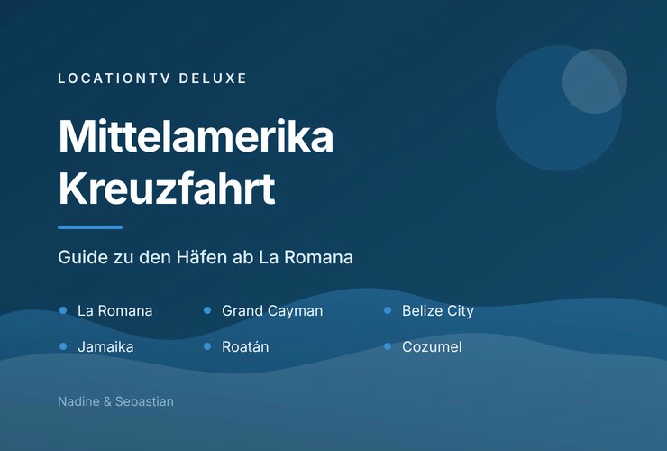

Wir sind Nadine und Sebastian von LocationTV Deluxe. Unser Guide hilft euch, auf der Kreuzfahrt ab La Romana die Haltage in Mittelamerika und der westlichen Karibik klar zu wählen – vor allem im Wasser, aber auch an Land.
Start und Ziel. In der Umgebung gibt es geführte Touren im Marinarium, mit Nurse Sharks und Rochen in halb-kontrollierter Haltung.
George Town ist ein Tenderhafen. Stingray City liegt flach bis auf knietiefes Wasser: Southern Stingrays kommen heran, ein Boot ist nötig, schnorcheln müsst ihr dort nicht.
Shark Ray Alley im Gebiet Hol Chan: Nurse Sharks und Southern Stingrays in freier Natur, flach und von Guides begleitet – nur per Boot.
In Ocho Rios oder Montego Bay liegt Dolphin Cove: Delfine in einem Gehege-Programm. Das solltet ihr in euren Filmen und Fotos klar kennzeichnen.
Auf der Insel vor Honduras gibt es geführte Delfin-Begegnungen in Gehege-Haltung, manchmal mit Nurse Sharks. Auch das gehört klar benannt.
Schnorcheltouren zu El Cielo und den Riffen: Rochen, gelegentlich Nurse Sharks, Schildkröten.
Starke Bilder für Natur, Kultur und Architektur – in diesem Guide ohne die typischen Hai- und Rochen-Spots der anderen Haltage.
Für alle, die diese Route ab La Romana fahren und vor Ort entscheiden wollen, welcher Halt sich fürs Wasser lohnt und welcher anders. Auch, wenn ihr die Begegnungen filmen oder fotografieren möchtet.
Die Rundreise ab und bis La Romana, mit Grand Cayman, Belize City, Jamaika, Roatán, Cozumel und weiteren Stops wie Puerto Limón, Colón und Cartagena. Zu den Wasser-Spots steht, was wild, an Menschen gewöhnt oder in Gehegen stattfindet.
Die ausführliche Seite Karibik Kreuzfahrt: Haie, Delfine und Rochen vertieft dieselben Spots. Diese Seite hält den Überblick kurz.